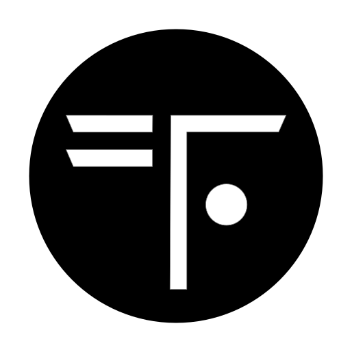
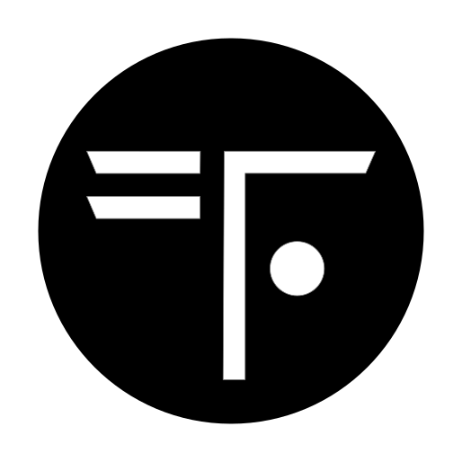

TERRAFORM COALITION
"WE SEE EARTH DIFFERENTLY"
Every day, nearly 400,000 new lives take root on planet Earth. Global population is set to surge past 10
billion before growth begins to stabilize. Depletion—ruthlessly outpacing recovery—defines our most
critical challenge. Humanity has overstretched Earth's resources by a staggering 70%—effectively using
1.7 Earths.
The limits of growth have been crossed. The challenge has fundamentally changed, but we still haven’t
realized the stark reality. Conservation—our presumed strategy—was an opportunity lost half a century
ago when we crossed the 4 billion mark. Thus, We haven't just fallen behind on sustainability challenges;
we've missed the alarm entirely.
This, however, is not a story of doom. It is the inception of the greatest endeavor humanity will ever
have to undertake: to co-create with Earth the evolution of our life-support systems. What nature has
meticulously crafted over eons, we must now heal and augment within the course of our lifetimes. Welcome
to the dawn of terraforming—ecosystem as a service.